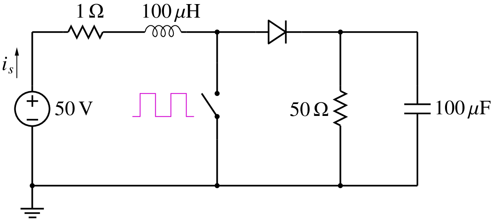
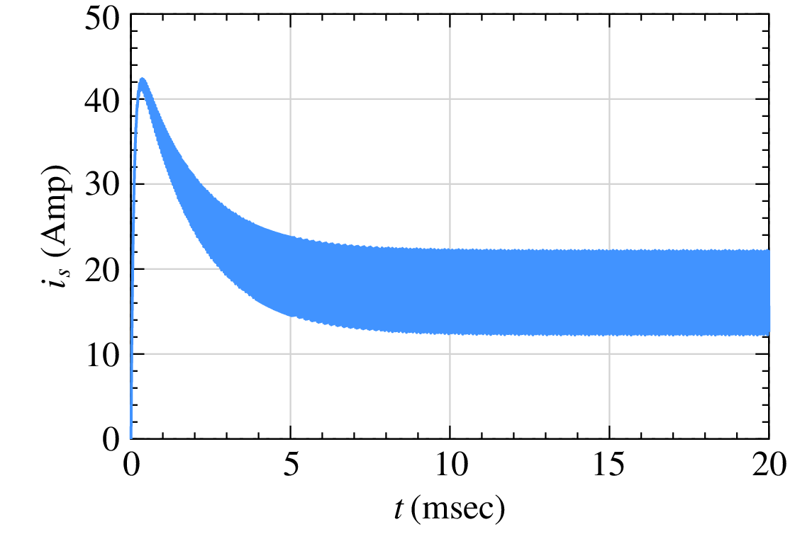
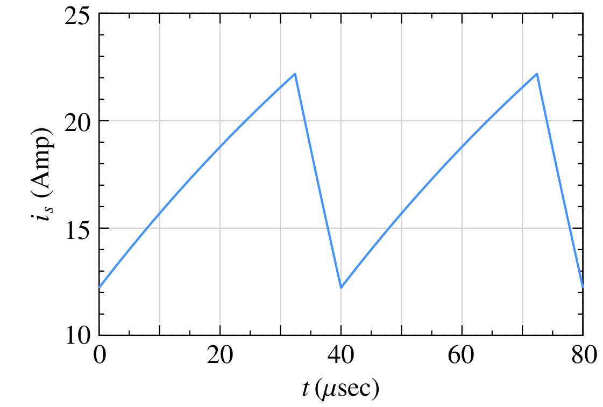
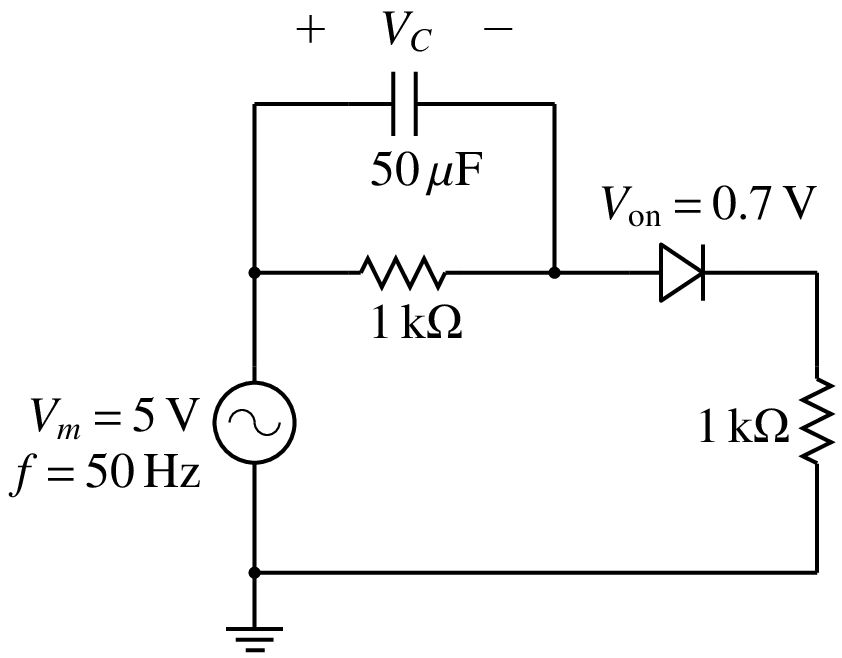
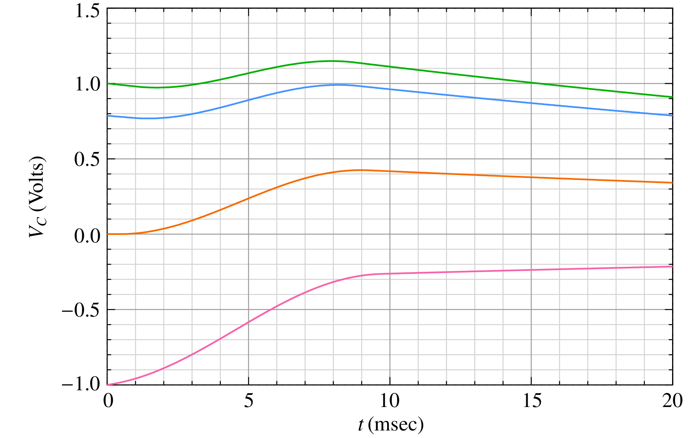

SSW computation¶
Consider the boost converter circuit shown in the figure with a clock frequency of \(25\,{\textrm{kHz}}\) (i.e., a period of \(40\,\mu s\)) and a duty cycle of 0.8. We are interested in the source current as a function of time.
{kind=link}
The following figure shows the source current \(i_s(t)\) obtained by transient simulation with a time step of \(0.1\,\mu {\textrm{sec}}\), starting with zero initial conditions. The circuit goes through a relatively long transient and finally reaches the periodic steady state at about \(10\,{\textrm{msec}}\).
{kind=link}
Our interest is in the steady-state behaviour of the circuit, i.e., just one period in the steady state comprising a time interval of \(T = 40\,\mu {\textrm{sec}}\) (see the following figure). To get to that one cycle in the steady state, we have ended up simulating \(10\,{\textrm{msec}}/40\,\mu {\textrm{sec}}\) or 250 cycles! Things get worse when the circuit time constants are larger.
{kind=link}
Apart from being inefficient in such cases, transient simulation presents another practical difficulty because the time taken to reach the steady state is generally not known in advance. In that situation, we would end up following a trial-and-error approach – simulate the circuit for a certain time, check if the steady state has been reached; if not, increase the simulation time, and check again. That is cumbersome. Clearly, it is desirable to have some means of computing the steady-state waveform (SSW) directly rather than going through a long transient.
The SSW problem has been addressed relatively early in the history of circuit simulation, (e.g., see [Aprille, 1972] for a time-domain approach, and [Nakhla, 1977] for a frequency-domain approach). Here, we will describe only the time-domain approach of [Aprille, 1972] which has been implemented in GSEIM.
The basic idea behind SSW computation can be illustrated with the help of the circuit shown below.
{kind=link}
In this circuit, the capacitor voltage \(V_C\) is the only state variable. If \(V_C(t_0)\) is known, then the behaviour of the circuit for \(t > t_0\) can be uniquely determined. The following figure shows the results obtained with various values of \(V_C(t_0)\) (where \(t_0 = 0\)) by performing transient simulation for one period of the source voltage, i.e., \(T = 20\,{\textrm{msec}}\).
{kind=link}
For example, consider \(V_C(0) = 0\,{\textrm{V}}\). In this case, we get \(V_C(T) = 0.34\,{\textrm{V}}\). This solution cannot be the periodic steady-state solution since \(V_C(T) \neq V_C(0)\). We can try other values of \(V_C(0)\) and check if the condition of periodicity is satisfied. As seen in the figure, \(V_C(0) = 1\,{\textrm{V}}\) or \(-1\,{\textrm{V}}\) also does not work. The correct value of \(V_C(0)\) turns out to be \(0.786\,{\textrm{V}}\) (the blue curve).
If there is only one state variable \(x_s\), we may be able to use a trial-and-error approach to find \(x_s(0)\) such that \(x_s(T) = x_s(0)\), but it is surely not a satisfactory approach. If the number of state variables increases, it would quickly become unmanageable.
Aprille and Trick (see References) presented a systematic Newton-Raphson approach to compute the initial values of the state variables such that the condition \({\bf{x}}_s(T) = {\bf{x}}_s(0)\) is satisfied (where \({\bf{x}}_s\) denotes the vector of the state variables).
The following figure shows the basic idea. For simplicity, the figure is drawn for the case of one state variable; however, the same procedure applies if the system has several state variables.
{kind=link}
Fig. 8 SSW basic idea
The flow chart for the SSW computation method presented by Aprille and Trick is shown below.
{kind=link}
Fig. 9 SSW flow chart
The SSW “outer loop” is a Newton-Raphson loop for computing the state variable value at \(t = 0\), i.e., \(x_s(0)\). The integer \(i\) denotes the outer loop index. The value of \(x_s(0)\) in the \(i^{\mathrm{th}}\) outer loop iteration is denoted by \(x_s^{(i)}(0)\). At the beginning of each outer loop, the state variable value is set to \(x_s^{(i)}(0)\), and the system response is computed for one period. This computation involves several time points, as shown in Fig. 8. Furthermore, at each time point, there may be an inner NR loop if the system is nonlinear.
We then check if \(x_s(T)\) is equal to the starting value \(x_s(0)\) (within a tolerance). If it is, our job is done; we have found the periodic steady-state solution. If not, the NR correction for \(x_s(0)\) and the next iterate \(x_s^{(i+1)}(0)\) are computed (in the outer NR loop), and the process is repeated. The Jacobian matrix for the outer NR loop is computed along with the response of the system with some extra computation, as explained in [Aprille, 1972].
As we have seen earlier, convergence of the NR process depends on the initial guess, and that is true for the SSW NR loop (the outer NR loop in the flow chart) as well. In our experience, convergence is generally not an issue for power electronic converter circuits – the SSW NR loop would converge starting with the zero initial condition, i.e., zero capacitor voltages and zero inductor currents. However, for some circuits, it may be required to perform transient simulation for a few cycles and then use the solution obtained as the initial guess for the SSW computation.
References¶
- [Aprille, 1972] T.J. Aprille and T.N. Trick, “Steady-state analysis of nonlinear circuits with periodic inputs”, Proc. IEEE, vol. 60, pp. 108-114, 1972.
- [Nakhla, 1977] M.S. Nakhla and F.H. Branin, “Determining the periodic response of nonlinear systems by a gradient method”, Int. J. Circuit Theory Appl., vol. 5, pp. 255-273, 1977.
- [Patil, 2002] M.B. Patil, M.C. Chandorkar, B.G. Fernandes, and K. Chatterjee, “Computation of steady-state response in power electronic circuits”, IETE journal of research, vol. 48, pp. 471-477, 2002.